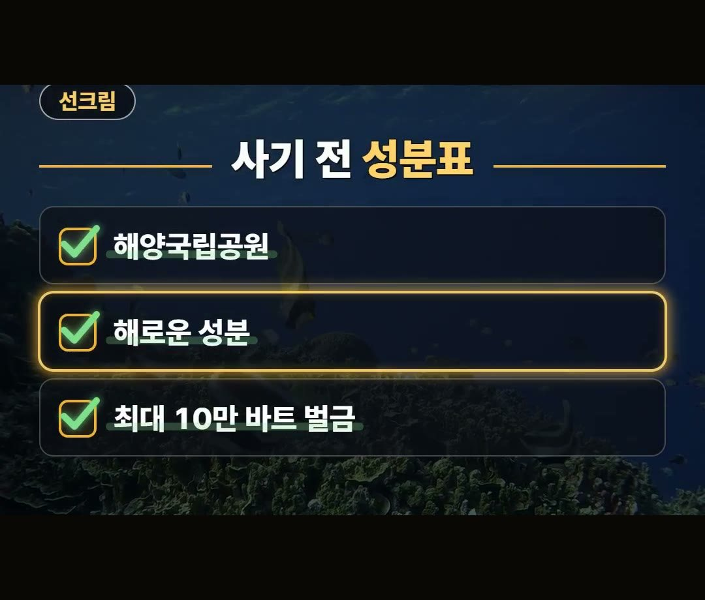
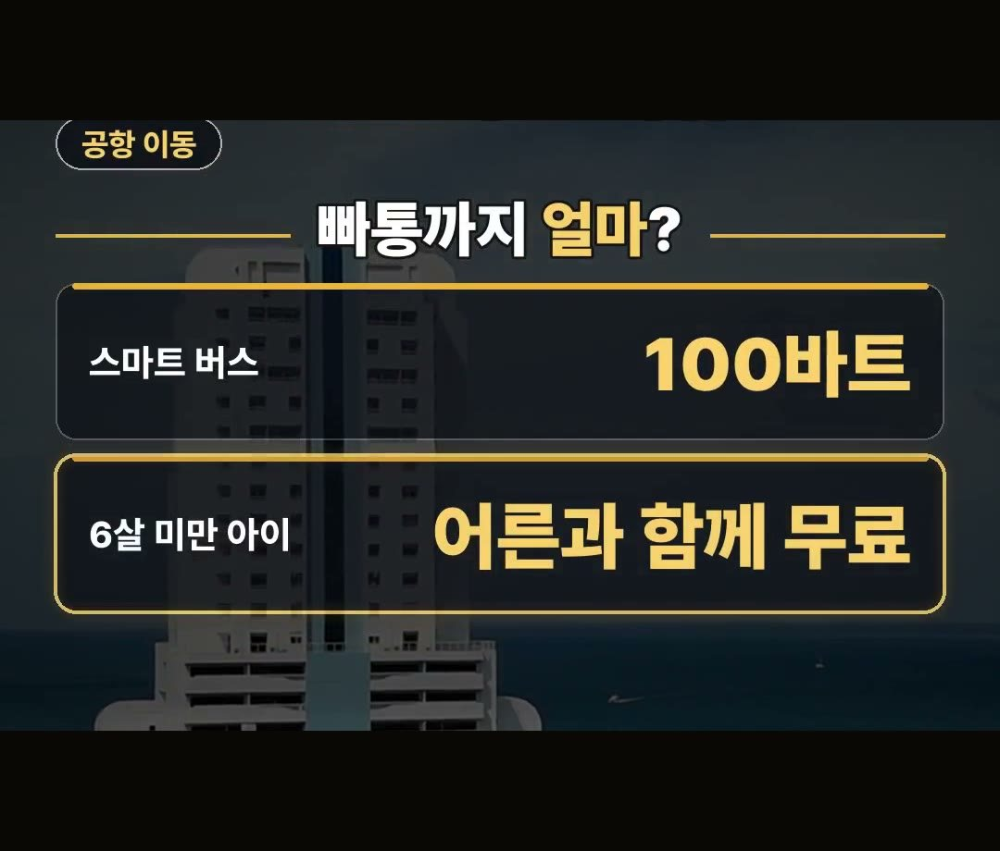
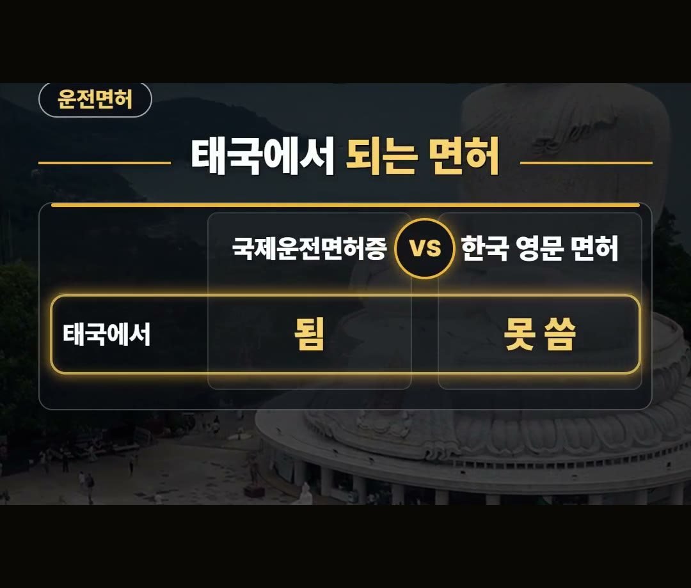

푸켓 여행 준비물, 선크림 하나에 벌금 10만 바트가 붙는 이유와 전자담배·운전면허
※ 이 글에는 제휴 링크가 포함되어 있으며, 링크를 통해 예약·구매하시면 일정 수수료를 받을 수 있습니다. (가격은 같습니다)
※ 이 포스팅은 쿠팡 파트너스 활동의 일환으로, 이에 따른 일정액의 수수료를 제공받습니다.
푸켓 여행 준비물을 챙길 때 수영복과 옷부터 가방에 넣고, 선크림은 집에 있던 것을 그대로 넣는 분이 많아요.
그런데 태국 해양국립공원에서는 산호에 해로운 성분이 든 선크림이 최대 10만 바트 벌금 대상이에요.
이 글에서는 바다, 길, 짐에서 벌금이나 불법이 걸리는 푸켓 여행 준비물만 2026년 10월 공식 안내 기준으로 골라 정리했어요.
푸켓 바다에 가기 전엔 선크림 성분표부터, 짐을 닫기 전엔 전자담배가 없는지부터 확인하기, 이것만은 기억하세요!
태국 해양국립공원에서 산호에 해로운 성분이 든 선크림은 최대 10만 바트 벌금이에요. 🌊

푸켓 여행 준비물 리스트, 옷보다 먼저 볼 것
푸켓 여행 준비물 리스트를 짤 때는 옷보다 먼저 볼 것이 있어요.
바다, 길, 짐에서 걸리는 것들이에요.
- 바다: 선크림 성분
- 짐: 전자담배
- 길: 공항에서 빠통까지 이동, 운전면허와 헬멧
- 입국: 온라인 입국 카드
선크림은 벌금, 전자담배는 불법이라서 모르고 가면 여행 첫날부터 곤란해질 수 있어요.
그래서 출발 전에 미리 알고 가면 피할 수 있어요.
아래에서 하나씩 순서대로 볼게요.
선크림은 성분표부터 보세요
태국 해양국립공원에서는 산호에 해로운 성분이 든 선크림을 쓰면 최대 10만 바트 벌금이에요.
그래서 푸켓 바다에 가져갈 선크림은 향이나 값보다 성분표부터 보는 게 순서예요.
- 장소: 태국 해양국립공원
- 대상: 산호에 해로운 성분이 든 선크림
- 벌금: 최대 10만 바트
바다 일정이 하루라도 있다면, 짐을 싸기 전에 가져갈 선크림의 성분표를 한 번 더 확인해 두세요.
선크림을 새로 산다면 고르는 자리에서 성분표를 먼저 읽는 습관이 도움이 돼요.
아이와 함께 가는 여행이라면 아이가 쓸 선크림도 같은 기준으로 보세요.

짐에서 뺄 것, 전자담배
전자담배는 태국에서 쓰거나 갖고만 있어도 불법입니다.
액상형, 궐련형 모두 해당해요.
- 사용: 불법
- 갖고만 있어도: 불법
- 종류: 액상형, 궐련형 모두
평소에 쓰던 것이라 무심코 가방에 넣기 쉬운 물건이에요.
푸켓 여행 준비물을 다 챙긴 뒤에는 가방과 주머니에 전자담배가 남아 있지 않은지 한 번 더 보고 출발하세요.
푸켓 공항에서 빠통까지, 스마트 버스
공항에서 빠통까지 스마트 버스는 100바트예요.
6살 미만 아이는 요금을 내는 어른과 함께 타면 무료입니다.
- 스마트 버스: 100바트
- 6살 미만 아이: 요금 내는 어른과 함께면 무료
아이와 함께 가는 가족이라면 이 조건을 미리 알아 두면 좋아요.
밤늦게 도착하는 비행기라면 공항 픽업이 편합니다.
도착 시간을 먼저 보고, 그 시간에 맞는 이동 방법을 미리 정해 두면 공항에서 헤매지 않아요.

운전면허와 헬멧, 입국 카드
태국에서는 국제운전면허증은 되지만 한국 영문 운전면허증은 못 써요.
- 국제운전면허증: 됨
- 한국 영문 운전면허증: 못 씀
한국 영문 운전면허증만 들고 가면 태국에서는 쓸 수 없으니, 이 차이를 꼭 기억하세요.
오토바이를 탄다면 헬멧을 늘 쓰고, 보험 가입부터 확인하세요.
입국 카드도 이제 종이 대신 입국 전에 온라인으로 써요.
출발 전 준비물 목록에 입국 카드를 같이 적어 두면 공항에서 서두르지 않아도 돼요.
데이터는 공항에서 헤매지 않도록 이심으로 미리 준비해 두세요.

정리
- 선크림: 태국 해양국립공원에서 산호에 해로운 성분이 든 선크림은 최대 10만 바트 벌금
- 전자담배: 태국에서는 쓰거나 갖고만 있어도 불법
- 공항에서 빠통까지: 스마트 버스 100바트, 6살 미만 아이는 요금 내는 어른과 함께면 무료
예약 링크는 아래에 모아 두었어요.
지금 쓸 수 있는 여행사 할인
- 📶 해외 데이터는 이심으로 미리 · 마이리얼트립 마이심 「태국 50% 1,200원~」 · 2개 이상 추가 할인 (마이심 화면 표시 기준 · 10/5 확인 · 값은 바뀔 수 있음)
※ 여행사 사정으로 조건이 바뀌거나 일찍 끝날 수 있어요. 예약 전에 여행사 화면에서 한 번 더 확인하세요. (2026-10-05 확인)
📘 무료 여행 가이드 전자책 모음 보기 (오사카 · 후쿠오카 · 타이베이 · 도쿄 · 일본겨울) ›
📌 2026년 10월 기준 정보예요. 가격은 환율·시기에 따라 달라질 수 있어요.
영상 화면: Pexels (Ali Kazal, Emrul Kausar Emon, JUN HO LEE, Joe Fikar, Maksim Romashkin, Peggy Anke)
사진: Pexels (Ali Kazal)